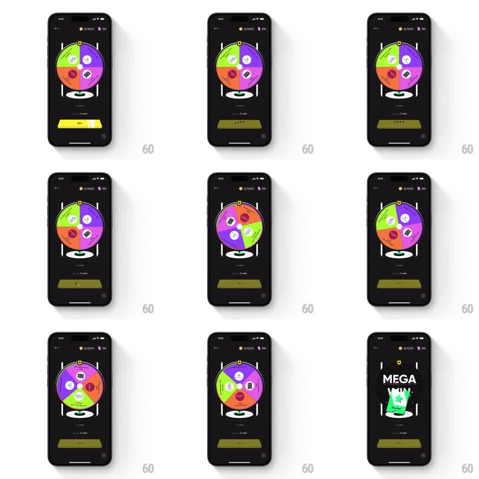

Media
Frame-by-frame

Rebuild this interaction 1:1: CRED's rewards wheel - tapping Spin sends a colorful six-segment prize wheel whirling with long deceleration, and the winning wedge detonates into a MEGA WIN voucher reveal.

Rebuild this interaction 1:1: CRED's rewards wheel - tapping Spin sends a colorful six-segment prize wheel whirling with long deceleration, and the winning wedge detonates into a MEGA WIN voucher reveal. ## Integration Integration: stack-agnostic spec - springs given as stiffness/damping, timed motions as duration + curve; map every value to your framework and animation library of choice. ## Scene Black screen: balances top-right, a large wheel center - six wedge segments in green, purple, orange, red, pink, lime, each with a prize icon, a pegged rim, and a pointer at 12 o'clock. Below: spin-cost text and a wide yellow Spin button. Final state: the wheel fades back and a "MEGA WIN" title drops in over a green voucher card with a star. ## Motion spec Pattern: spin-the-wheel with weighted deceleration into a win reveal. - Tap Spin: the button dims, the wheel launches to ~720deg/s within 300ms (ease-in), holds top speed ~1s, then decelerates with a long ease-out (~3.5s) - the slow-down is the suspense curve. - During the last second, segment boundaries tick past the pointer; the pointer kicks back ~15deg with a small spring each time a peg passes (stiffness ~500, damping ~15). - The wheel lands with the winning wedge centered under the pointer and one final settle (rotation overshoot ~2deg, spring back). - Win beat: the wheel scales down and dims while the winning wedge's color floods outward; "MEGA WIN" slams in (scale 1.5 to 1.0, spring stiffness ~320, damping ~18) and the voucher card pops up under it (spring, slight rotation settling to 0). - Confetti sparkles behind the title for ~1.5s. ## Calibration - Deceleration must feel physical: cubic or quartic ease-out, never linear; a linear slowdown reads as a broken spinner. - The pointer tick is what makes deceleration audible-looking - do not skip it. ## Reduced motion Wheel spins a single fast revolution (~800ms) and stops; title fades in without slam. ## Don't miss - Six saturated wedge colors on black - the wheel is the only color on screen until the win flood. - The Spin button is bright yellow and stays visible until the spin starts; it anchors the "your move" moment.